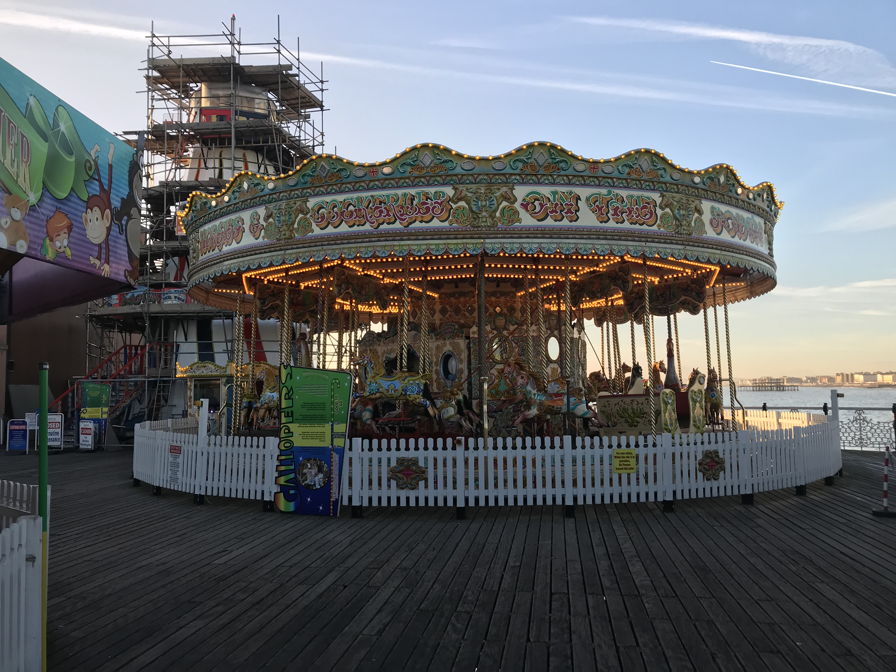
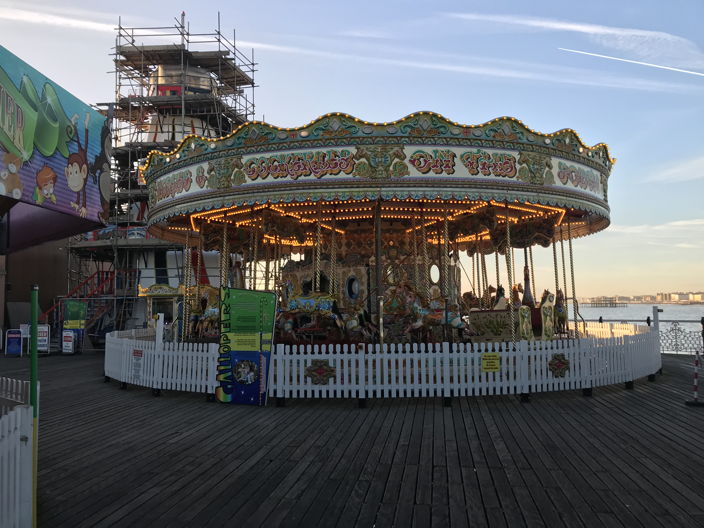

A brief history of the pier:
Brighton Palace Pier, or more commonly known as Brighton Pier opened in 1899 as the third pier in Brighton after the Royal Suspension Pier, West Pier; but now is the only one still in operation. It was built as a replacement for the Chain Pier which collapsed in 1896 during construction. By 1911 it was extremely popular and had became a frequently visited theatre and entertainment venue and then was closed down due to the war. However, it continued to hold regular entertainment up to the 1970's, the theatre was damaged in '73 and following it's buy out it was demolished in 1986 and rebuilt as an amusement park with various roller coasters. The pier is 525m (1,722 feet) long and contains 137km (85 miles) of planking; furthermore, due to it being so long it takes 3 months every year to be repainted and at night is illuminated by 67, 000 bulbs.
Brighton Pier opening Times:
| Monday - Friday: | Saturday: | Sunday: | |
|---|---|---|---|
| Rides: | 11:30 - 16:00 (18:00 Friday) | 10:00 - 19:00 | 10:00 - 18:00 |
| Palace of fun: | 11:00 17:30 | 10:00 - 21:00 | 10:00 - 19:00 |
| Dome / Palace Play: | 11:00 - 17:00 | 10:00 - 19:00 | 10:00 - 18:00 |
| Side Shows: | Closed | 11:00 - 17:00 | 11:00 - 17:00 |
| Tin Can Alley: | Closed | 11:00 - 19:00 | 11:00 - 19:00 |
| Victoria's Bar: | Closed For Refurbishment | 10:00 - 21:00 | 10:00 - 20:00 |
| Horatio's Bar: | 11:00 - 17:00 | 1-:00 - 21:00 | 10:00 - 20:00 |
How to get to the Pier:
From Mouslecoomb campus by car:
To get to the pier by car either follow the directions given by google by clicking on the link or the image bellow.
Pier directions by car:From Moulsecoomb train station to Brighton:
To get to the pier from the Moulsecoomb campus where you will be studying you will have to take the train from the station down to Brighton train station and then follow the directions below.
Or click on this link, how to get to Brighton train station from Moulsecoomb:From Brighton train station by foot:
You can either walk directly down the main road towards the sea then turn left at the sea front and follow along the main road, you will be able to see the pier from there (follow the red line), or follow the directions on the image. Furthermore, You can take the number 14 or 27 bus which runs directly from the station, I have also attached a link you can click on that will take you directly to google maps.
How to get to the pier from Brighton train station: A panorama of the Brighton Pier. View includes the beach and is viewed from the east. © John Vos.
A panorama of the Brighton Pier. View includes the beach and is viewed from the east. © John Vos.
Rides and Attractions:
Pricing:
Brighton Pier has it's own funfair at the back of the pier with lots of rides and activities for all ages; ranging from trampolines, a carousel, a horror hotel to the dome arcade. Prices range from £2.50 to £5.00 or you can buy unlimited ride wristband in advance and save up to 25%.
| Weekday Wristband: | Friday Wristband: | Weekend Wristband: | |
|---|---|---|---|
| Kiddies: under 1.2m | £9.00 | £7.00 | £9.00 |
| Super Saver: over 1.2m | £15.00 | £10.00 | £17.50 |
Rides:
The Palace of Fun:
The Palace of fun is your typical arcade with the latest games, from the classic 2p pushers to the latest simulators; from Guitar Hero© to Air Hockey. This one is perfect for if you visit the pier on a rainy day and for the younger siblings.
The Dome
The Dome is the second arcade area that the pier has to offer. In this arcade they have an NBA basketball Game where you can challenge your friends / family on a day or night out or even on their Air Hockey Tables with either the classic one puck 2 players or up to 4 players with 25 pucks. You can collect tickets to be able to win great prizes.
For a younger audience:
The pier is full of stuff to do, even for the younger crowds; such as, the Trampolines, dragon fly or a mega slide.
Concessions
The pier also has quite a few shops for souvenirs and the famous Brighton rock.
Rides Information:
*All rides have unlimited access if you have a wristband, prices above. The requirements marked with a * requires a supersaver wristband and someone over 1.4m. The i220 is open from 11:00 to 20:00 on weekdays and Sundays and from 11:00 to 21:00 on Saturdays (times may vary and are subject to change). The dome is open from 11:00 ti 20:00 on weekdays and Sunday and from 11:00 to 21:00 on Saturdays.
| Ride: | Rating: | Pricing: | Requirements: |
|---|---|---|---|
| Air Race: | £5 each ride. | Minimum Height is 1.2m | |
| Bouncy Castle: | £2.50 each ride. | Between 0.9m and 1.2m. | |
| Carousel: | £3.00 each ride. | Between 0.9m and 1.2m*. | |
| Crazy Mouse: | £3.00 eacg ride. | Between 0.9m and 1.2m*. | |
| Cup ‘n’ Saucer: | £2.50 each ride. | No restrictions. | |
| Dodgems: | £3.50 each ride. | Between 1.2m and 1.4m*. | |
| Dragon Fly: | £2.50 each ride. | Under 1m*. | |
| Fantasia: | £3.00 each ride. | Between 0.9m and 1.2m. | |
| Galaxia: | £4.50 each ride. | Between 1m and 1.4m. | |
| Helter Skelter: | £1.50 each ride. | Between 0.9m and 1.2m*. | |
| Horror Hotel: | £4.50 each ride. | Between 1.1m and 1.3m*. | |
| i220: | £3 each ride. | Between 1m and 1.8m. | |
| Mega Slide: | £2.50 each ride. | Between 0.9m and 1.5m. | |
| Palace Play: | Palace Play: | Over 1.9m. | |
| The Booster: | £7.00 each ride. | Minimum height 1.4m. | |
| The Dome: | Prices vary (~£1). | None. | |
| Trampolines: | £3.50 each ride. | Minimum height 1.2m. | |
| Turbo coaster: | £5.00 each ride. | Minimum height 1.3m. | |
| Twister: | £4.50 each ride. | Between 1.2m and 1.4m*. | |
| Waltzers: | £4.00 each ride. | Between 1.2m and 1.4m*. | |
| Wild River: | £5.00 each ride. | Between 1.2m and 1.4m*. |
 

Eating at the pier:
If you find yourself feeling hungry at the pier you're in luck, you are spoilt for choice. The food choice ranges from a simple hot dog from a food stand to milkshakes and ice creams to a sat down menu in a restaurant. Horatio's bar has fantastic food, they have a capacity of 350 and have live sports on with a beautiful panoramic coast view and regular live music. If you don't have time or not in the mood for a sat down meal you can always opt in for any of the food stands the pier has to offer, I would strongly recommend the hot dog hut on the left at the entrance of the pier.
Rating:
| Restaurant: | Rating: | Open Hours Weekdays: | Open Hours Weekends: | Contact Info: |
|---|---|---|---|---|
| Palm Court: | 11:30 - 19:00. | 11:30 - 20:00. | 01273 609361 | |
| Victoria's Bar: | 10:00 - 21:00 | 10:00 - 22:00 | 01273 609361 | |
| Horatio's Bar: | 12:00 - 19:00 | 12:00 - 19:00 | 01273 609361 |
Contact information:
Address: Madeira Drive, Brighton, E Sussex, BN2 1TW
Mobile Number: 01273609361
Email Brighton Pier: info@brightonpalacepier.co.uk
 Panorama of the pier and the beach © John Vos
Panorama of the pier and the beach © John Vos